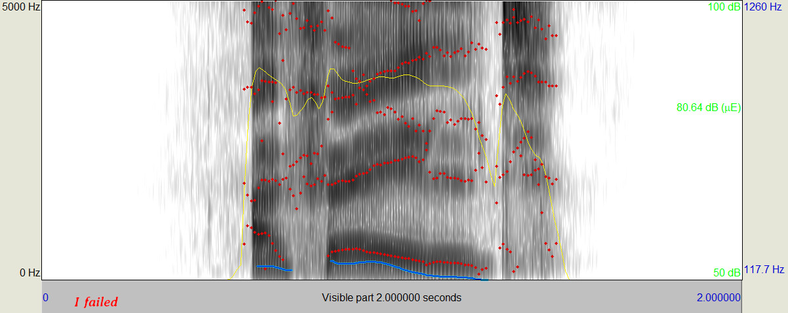
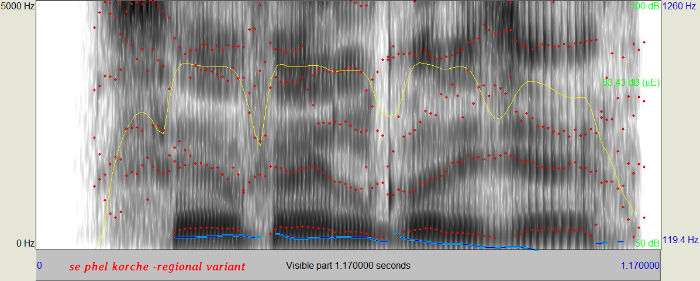
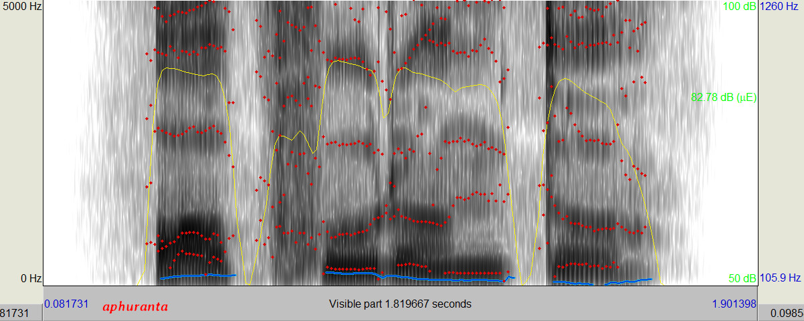
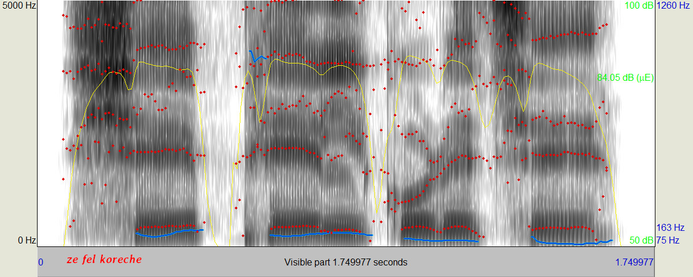

The stop consonant number 22 of Sanskrit is invariably spelled PH. However some people say it wrong. This page shows some wrong ways of saying it, and one of the right ways.
This is from "He failed" in English --

The sound is white noise caused by the turbulence of air forced between lower lip and upper teeth. See wikipedia for details on lip position.
This is from "shay fail koraichay" in some Bengali variant --

Same as (A), but turbulence hapens between lip and lip.
This is from "shay fail koraichay" in some other Bengali variant --

This starts with a p sound, then goes into (B) above.
This is from "ephe" in Sanskrit --

This is a P sound followed by an aspiration. The part (1) is part of an "e", the (2) is the P part, the 3 is the aspiration (see https://en.wikipedia.org/wiki/Aspirated_consonant | wikipedia aspirated consonant), and the (4) is another "e".
If you pronounce the Sanskrit PH like (A) or (B) it is unlikely that anyone in West Bengal might complain about that, or misunderstand you. Yet, that's no good Sanskrit, anyway. You can use it if you are okay with people saying that you pronounce Sanskrit with a Bengali accent.
Option (C) sounds unnatural to Bengalis (feels too "strong"), and is not good Sanskrit either. Forget about it.
Option (D) is Sanskrit. Good enough for chanting the vedas. Practice that one. Make spectrograms of yours and check that your looks like (D) gram above, not like (A) (B) (C).